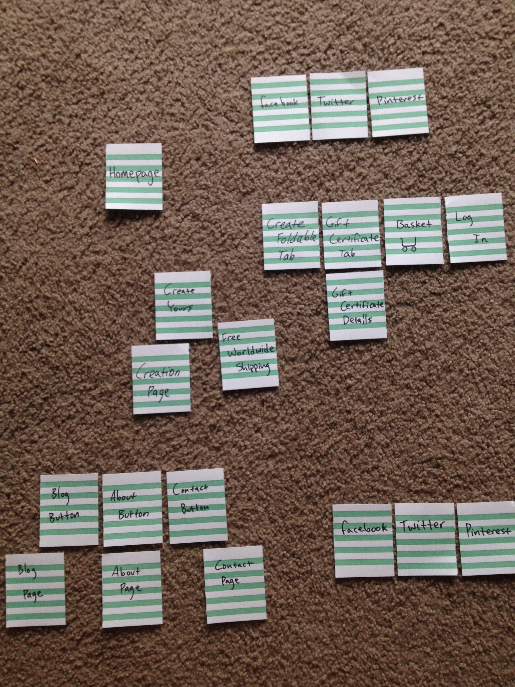
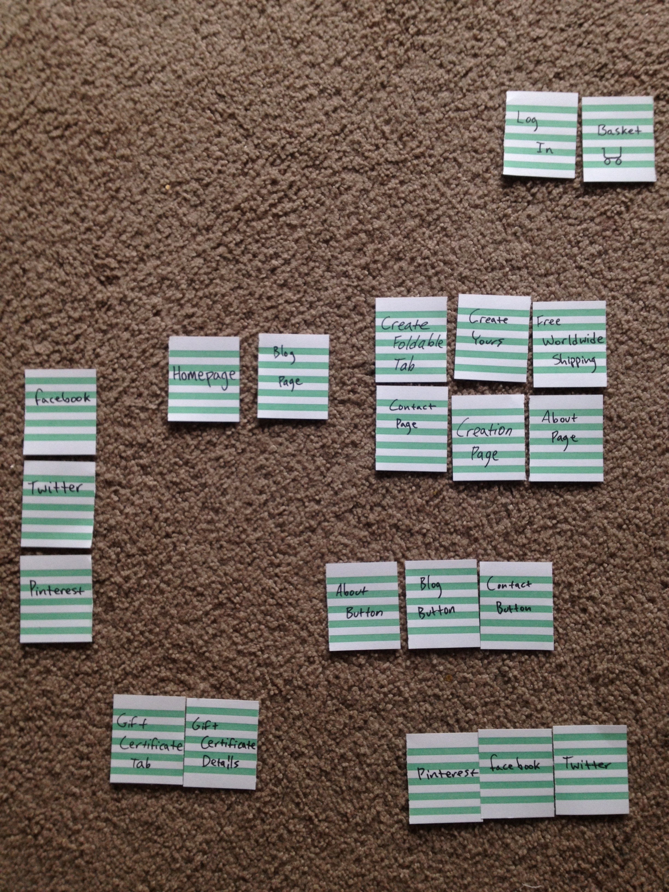
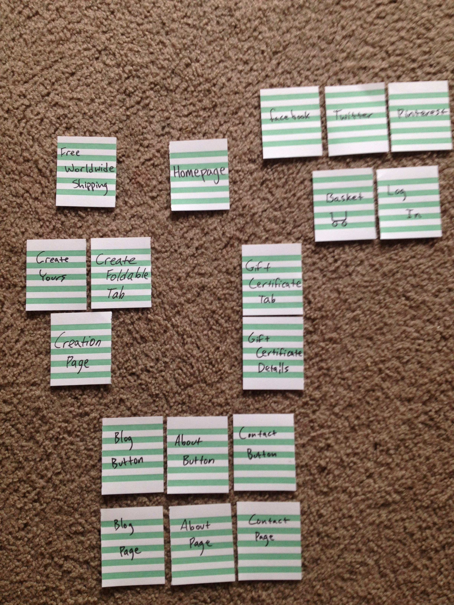
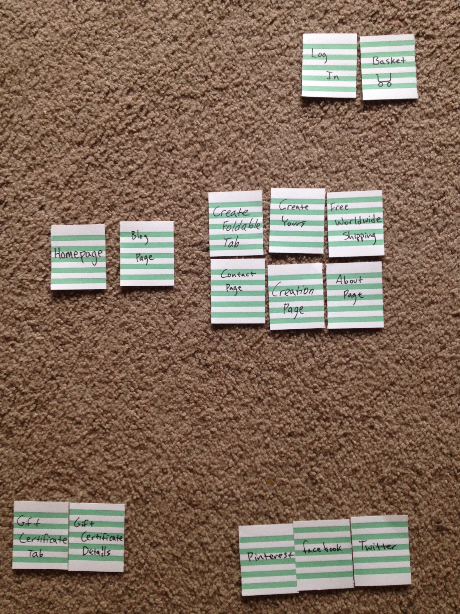

Here is the layout that I did for the Foldable Me site. It's similar to the layout they currently have, because I think that layout works well.

Here is the layout that my roommate did for the Foldable Me site. It's similar to the layout they currently have, but has a few variations as well. I didn't let them look at the site so as not to draw on the ideas that were already in place.

Here is the layout that one of my friends did for the Foldable Me site. I didn't allow him to view the website before-hand, so it would be a more original creation.

My girlfriend made the final layout design for the wesite. There's a lot of variation in the designs from various people.

First, I sorted the cards, in a way that I thought was most intuitive for the user. This involved some influence from the existing website since I had already seen it. Next, I had my roommate, friend, and girlfriend, do some card sorts and organize the site the way they thought best.
It turned out, I got a lot of different designs and possible insight for a new design for the website. I had never done the card sort activity before, but it turned out to be a very simple way to get other people's ideas and formulate the best website possible. I would likely do this activity again in the future for designing a website.